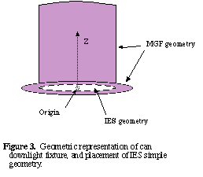
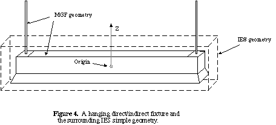

[LUMINOUSGEOMETRY] mgf_file
The given MGF file must exist relative to the directory containing the IES file (i.e. the same stipulations and restrictions on pathnames apply as for the MGF i entity). Furthermore, the position of the MGF geometry must be such that the gross geometric specification of emitting surfaces in the IES file completely blocks or encloses the luminous portions of the MGF description. Specifically, any ray traced towards the MGF geometry must strike the IES gross geometry before it strikes any luminous surface in the MGF description. This provides a convenient way of preventing overcounting in the illumination calculation, while still allowing for accurate fixture appearance.
To give two examples, let us consider first a recessed can, followed by a hanging direct/indirect fluorescent fixture.
The most appropriate IES geometric specification for the emitting area of a can light would be a circular disk. Since the IES gross geometry gives only the diameter of the disk, the actual 3-dimensional placement is implicitly defined as having a center at the origin, with the radiating disk facing in the negative Z direction (nadir, downwards). The MGF geometry would then be placed such that any luminous portion was above this disk, and no portion of it would obstruct the IES geometry. The most sensible position therefore has the IES disk flush with the MGF can opening, as shown in Figure 3.

In the case of a direct/indirect fluorescent fixture, light will exit both the top and the bottom sides, and the IES geometry must enclose the radiating portion of the fixture entirely. It is acceptable to have additional MGF geometry above the fixture so long as it does not radiate, which is what we must do if we wish to include the support rods, as shown in Figure 4.

Note that the origin is always in the exact center of the IES geometry.
Not all fixtures will fit the simple IES geometry specification so nicely. For odd-shaped fixtures, it may be necessary to use an IES geometry that does not match the radiating area terribly well in order that it completely block or enclose the required MGF specification.
The unit of length in the MGF file is always meters, regardless of the units specified in the enclosing IES file. However, any and all multipliers applied to the candlepower data in the IES file will also be applied to the emittance of surfaces in the MGF specification, so that one MGF file may serve similar luminaires that differ in their total output.